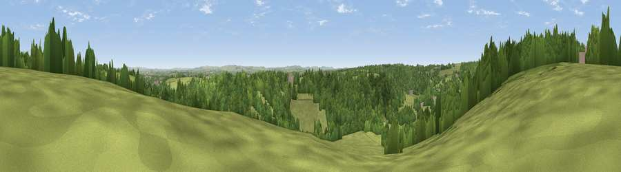

Viewpoint near Winsley
#27110 in England · top 47% of its area beats it · near WinsleyThe view, rendered

A 360° render of this exact spot computed from the terrain model, tree cover and land cover — summer colours, afternoon light, calibrated against photographs of famous viewpoints. Real trees, hedges and buildings will differ in detail.
The panorama
Grey silhouette: terrain skyline in each direction (720 bearings, Earth curvature and refraction included). Dashed green: skyline with trees (+15 m) and buildings (+8 m) as obstacles. Blue strip: how far the ground is visible on each bearing.
Where the view opens
Wedge length = distance to the farthest visible ground on that bearing (vegetation-aware). Rings at 10, 25 and 50 km.
What fills the view
56% woodland · 39% grassland · 2% cropland · 2% built-up
Angular shares of the visible panorama (visual magnitude), not map area. Landscape diversity 0.37 (0–1 Shannon).
Key numbers
More beautiful places nearby
The staircase of upgrades: each row has a higher view potential than everything closer. Driving times are estimates from straight-line distance, calibrated against real road routing — check an actual route before setting out.
| Place | Direction | Drive | Score |
|---|---|---|---|
| Viewpoint near Limpley Stoke | W · 3 km | ~7 min | 60.8 |
| Viewpoint near Bathford | N · 6 km | ~13 min | 64.0 |
| Viewpoint near Combe Hay | W · 8 km | ~16 min | 66.1 |
| Viewpoint near Inglesbatch | W · 9 km | ~18 min | 68.8 |
| Viewpoint near Kelston | NW · 11 km | ~22 min | 74.2 |
| Viewpoint near North Stoke | NW · 13 km | ~23 min | 75.4 |
| Hanging Hill | NW · 13 km | ~24 min | 76.4 |
| Cley Hill | SSE · 16 km | ~28 min | 76.8 |
51.34301, -2.28529 · source: screening · position refined by local search. Computed location — check access rights before visiting.